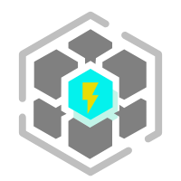
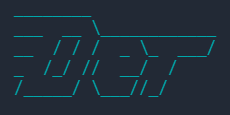

⚡𝓓𝓮𝓻 - A scaffolding tool for FE
What is 𝓓𝓮𝓻?
- A scaffolding tool to improve development efficiency for the front end, build with Node.js.
- 一个提升前端开发效率的脚手架工具。
𝓓𝓮𝓻’s Feature
- 😎 专一性: 专注于前端模板与自动化发布功能;
- ⚡ 高性能: 基于 Node.js 多进程执行任务, 并配合本地缓存;
- 🔨 扩展性: 基于 Class 式编程，功能扩展更便捷;
- 🔥 规范化: 使用 Lerna 工具架构仓库, 优化工作流程;
- 🔰 安全性: 所有私人信息以本地缓存保存.
𝓓𝓮𝓻 can do
- [x] Create a new project
- [x] Auto commit & create a remote repo(github/gitee)
- [x] Version control
- [x] Specification submission code
- [ ] then…
Quick Start
本地安装
1 | npm install @der-cli/core -g |
初始化项目
1 | mikdir mytest |
提交 & 初始化 Github/Gitee
该命令会在本地初始化
.git, 且提交代码至远程仓库。
注意：
der go会将代码提交至项目同名远程仓库中(package.json的name属性值)，若远程仓库不存在，则会自动创建，这需要你提前准备好你的远程仓库 APP Token, 详见 docs: App Token.
1 | der go |
发布 tag
该命令会删除当前版本开发分支并创建同版本 tag 分支，然后提交至远程仓库
例: dev/1.0.1 => release/1.0.1，详见 docs: Git_Flow.
1 | der go -release |
More
清空脚手架本地缓存
关于脚手架缓存，详见 docs: Cache 缓存.
1 | Default: clean all |
DEBUG 模式
1 | der --debug |
更多命令 详情
调试本地包
see docs
TODO
- [ ] Add test:BDD tests
- [ ] Reconstruction with TS
- [ ] Add feat:add page(may)
Documents 说明文档
Goodbye, context switching.
Hello, terminal.
需求 & 使用场景
所有需求与场景仅限解决本人日常开发问题，如果你有与本人同样的需求，那么此脚手架工具应该能解决你的一些问题。
关于为什么要设计这个脚手架，当然是有需求，没有需求的产品都是耍流氓，那具体需求是啥？且看小y娓娓道来~
项目初始化
首先，作为一个前端，需要学的东西有亿点点多，特别是现在框架横行的时代，光初始化一个项目就杂七杂八多得一匹，什么 vue create xxx create-react-app npx create-nuxt-app yarn create vite 那简直太多了，不专门拿个小本本记上谁背得住，这些是开发一个稍微正经一点的项目的必备阶段，要是每次都要去搜一下怎么初始化也太浪费时间了，于是，der-cli 的第一个需求来了：初始化任意前端项目, 并且可以后续自由扩展。
初始化什么样的前端项目呢？
答：当然是想怎样就怎样！不仅是平时个人开发经常使用的模板，还可以把官方的标准模板也加上去，当然一般来说普通的标准模板不满足开发需求，所以脚手架主要会提供一些配置完善的模板，具体有多完善可以参考这个模板…开个玩笑，有这模板的一半完善都ok，主要包括一些webpack配置、路由、ESlint、Store等等基本配置，能实现一个完整的、能跑起来的小demo，这就是der-cli 对 init 功能的定义。
发布项目
初始化过后，就该认认真真(划水水摸鱼鱼)写代码了，写到一半，群友提醒你做提肛运动了，那你是不是该保存一下代码，咋个保存？相信大部分人都将代码放在Github或者Gitee上吧，那你又要去上面先创建个仓库，然后add remote，然后时候你也许会熟练的在terminal里面敲上了三个命令: git add . git commit -m 'feat:add a bug' git push ，也许是打开文件夹，找到当前项目，然后打开 TortoiseGit，点点点提交走人，但是我懒了，我就不想点三下，我就点一下，想搞定所有，那需求不就来了： der-cli 能通过一个命令完成仓库初始化本地/远程仓库、提交代码、创建分支、发布分支。
这就是 der go [-re] 的意义（提高效率才不是为了摸鱼）
一般开发中，整个流水线基本流程可包括 初始化 -> 开发 -> 代码测试 -> 代码发布 -> 项目部署 ， der-cli 在整个 workflow 中，占据了 初始化、代码发布 两个流程。
不管是独立开发还是团队开发，打通项目流程，完成闭环 是提升后期开发效率的必需事项，der-cli让你从初始化到项目发布Tag一步到位，可以专注于代码逻辑编写。
当然，一些 github action 也可以完成自动发布tag的功能，为什么不选择它们呢？ der-cli 把 一些 workflow 流程放到了客户端来完成，只需要全局安装了此脚手架，那么在所有项目中都能够使用这个 workflow，如果是使用类似 github action 的话，需要给每个项目都写一份 yaml 作为 workflow 配置，这让开发者的工作有了一定的重复，当然 workflow 的可定制性非常强大，是鄙人小小脚手架不可比拟滴，所以 der-cli 主要还是面向一些简单的、独立开发者的项目而定制的脚手架。
架构设计
der-cli 采用单仓库多工具包模式开发，使用 Lerna 管理工作流程，前端流行的开源库Babel、React等也采用了这种架构模式，每一个包都能单独下载使用，且方便管理与维护。
更多架构设计请查看 der-cli架构方案.
Git Flow 自动化
Git工作流程自动化。
简单来说，就是代替了手动执行 git add 、git commit、git checkout 、git push 等命令，通过 der go 以及 der go -re 完成了初始化仓库、代码提交、发布版本等操作，这对有一定 git 操作经验的用户来说很容易理解，即使你是新手也完全可以使用此脚手架来完成你的项目规范发布。
下面详细介绍其执行流程。
Git Flow - Prepare阶段

Git Flow - Init阶段

Git Flow - Commit阶段

Git Flow - Finish阶段

Git Flow 命令
-
der go提交代码到远程仓库:- Prepare
- Init
- Commit
-
der go -re提交代码到远程仓库并发布Tag:- Prepare
- Init
- Commit
- Finish
Cache 缓存
der-cli 为了提高运行效率，在初始化应用以及自动发布时都采用了缓存机制，充分利用了客户端应用本地机制。但这不需要你提供 root 环境，der-cli 与其他脚手架工具遵循同样的原则: no-root，这在一定程度上能保护你的电脑文件不被误操作从而引起不必要的错误。
der-cli 缓存文件默认位于：C:\users\[hostname]\der-cli\
下面将解释 der-cli 缓存文件的位置及作用。
.git
Located at C:\users\[hostname]\der-cli\.git
用于缓存 Git 操作信息，这些信息将用于代码提交、创建远程仓库、发布分支，是 [Git Flow](#Git Flow) 流程的必要缓存。建议不要随意删除。
APP Token
在本地缓存 .git 目录下，有一个名为 .git_token 的文件，用于保存 Github / Gitee 的 App Token 信息，这将用于 [Git Flow](#Git Flow 自动化) 流程。包括以下值：
- xxxxxxxxxxxxxxxxxxxxxx (随机字符串)
App Token 需要用户手动生成，生成地址：
由于 App Token 仅在创建时可见，这需要你自己在本地备份一个 Token 信息，以免当脚手架缓存文件被误删后，能快速找回；如果不这样做，也不是不行，你就需要重新在上面的链接中重新生成一个 Token.
Git Server
以 .git_server 文件保存的信息，用于确认远程仓库平台，包括以下值：
- Github
- Gitee
Git Own
以 .git_own 文件保存，用于确认仓库所属类型，包括以下值：
- user 表示该仓库所属个人用户
- org 表示该仓库所属于一个组织
Git Login
以 .git_login 文件保存，用于保存仓库拥有者名称，包括以下值：
- Github name or Gitee name
dependencies
Located at C:\users\[hostname]\der-cli\dependencies
用于缓存项目依赖文件，包括 der-cli 源码文件。
每次运行 (任意命令) 时，脚手架会在启动阶段检查脚手架源码版本，当发现新版本时，会自动更新 npm。
建议国内用户切换淘宝镜像源:
npm config set registry https://registry.npmjs.org/
template
Located at C:\users\[hostname]\der-cli\template
用于缓存 项目/组件模板 源码。
当用户选中某个模板，在其 init 阶段时，脚手架会自动检测其 npm 发布版本，若发现有更新，则会自动更新为最新版。
Commands 命令
init 初始化项目
1 | mikdir mytest |
go 提交代码
1 | der go |
go 发布代码
1 | der go -re |
More
clean 清空本地缓存
关于脚手架缓存，详见 docs: Cache.
1 | Default: clean all |
debug 模式
1 | der --debug |
更多命令 详情.
本地开发
TODO
Other
env
der-cli 支持客户端环境变量设置，一般情况不需要关注环境变量。
但如果你想开发本项目或其他需求，可以在你的主机自定义一些变量，通过修改 .env 文件即可。.env 文件位于C:\users\[hostname]\路径下，即 C:\users\[hostname]\der-cli\.env ，若你的主机没有这个文件，手动创建即可，设置好后保存，der-cli 会自动读取这些变量。
下面是一些环境变量示例：
1 | Some environment variables example, you'd better not change them. |
https://github.com/der-cli/der-cli/blob/master/Documents.md)
Q & A
1.执行完初始化后，可以直接提交代码吗？
答：可以。前提是准备好你的docs: App Token.
License
Tips: Please indicate the source and original author when reprinting or quoting this article.